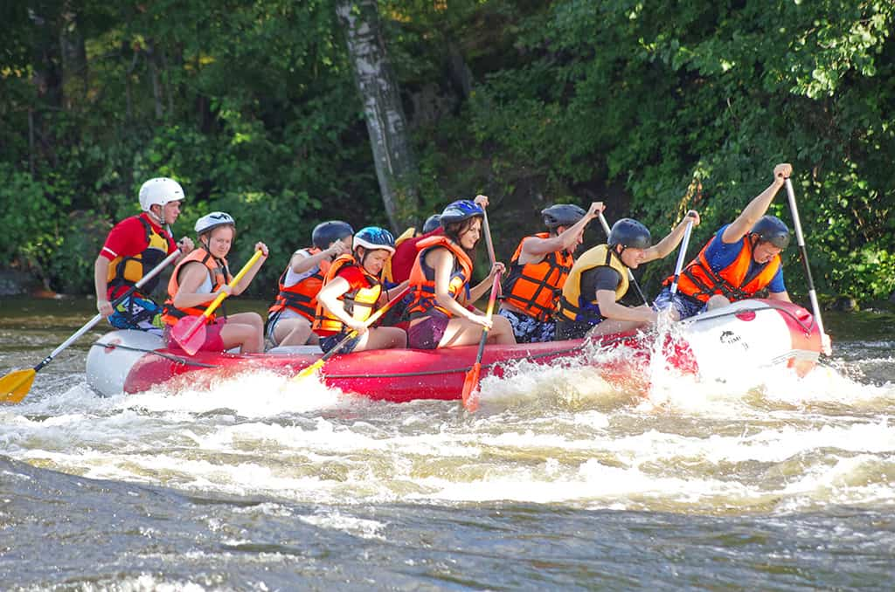
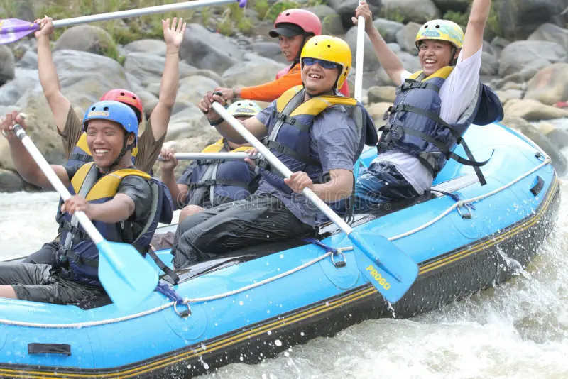
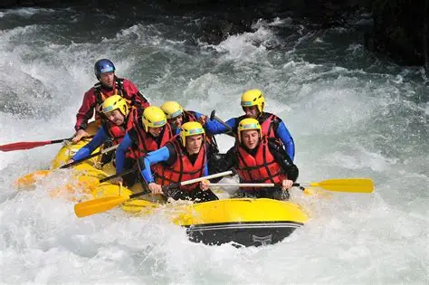
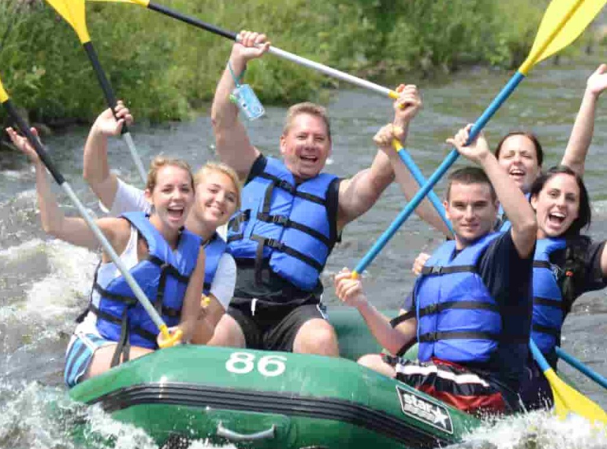
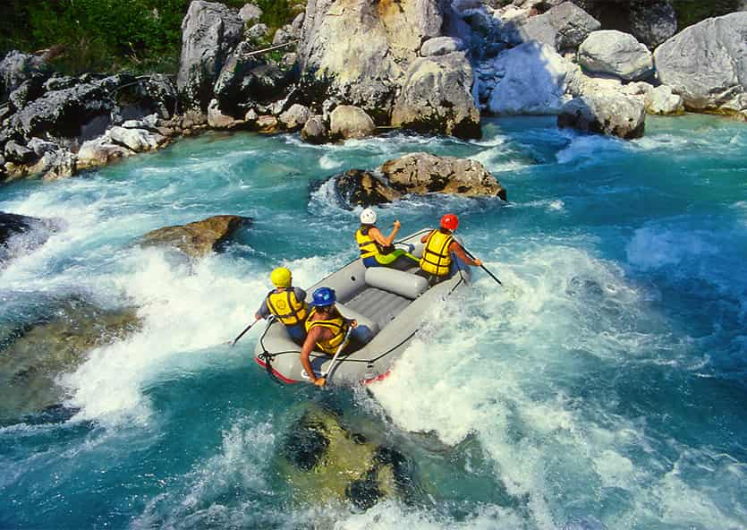
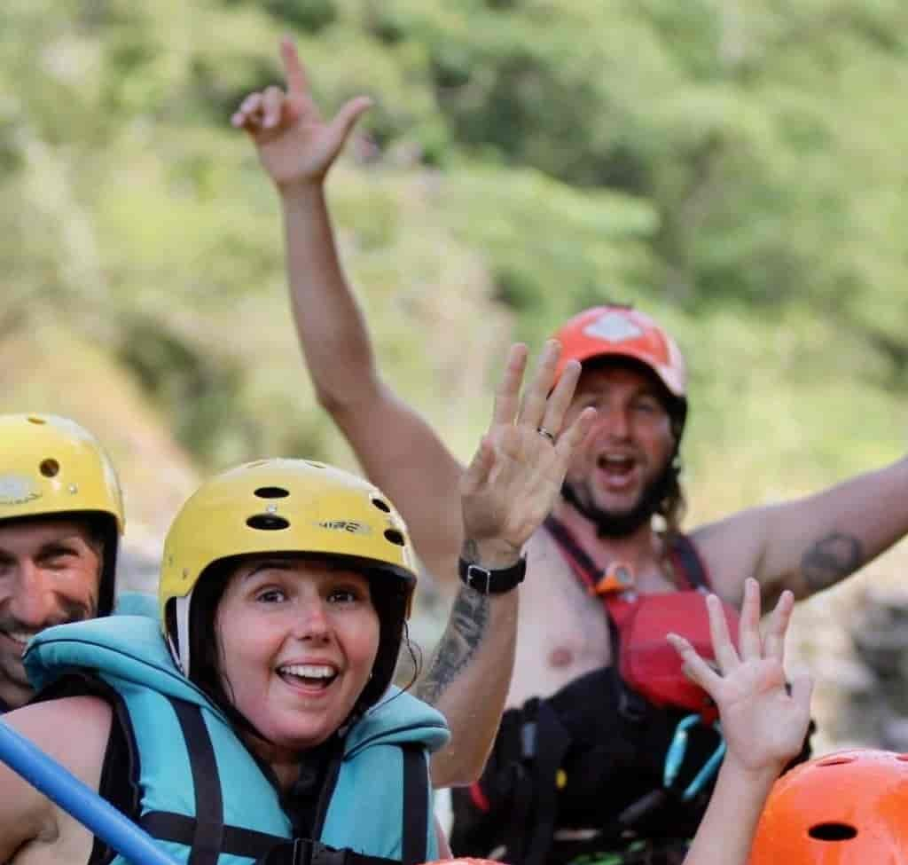

At WhiteWater Rush, our mission is to ignite your spirit of adventure through unforgettable whitewater rafting experiences. We believe that nature is best experienced up close — through roaring rapids, breathtaking scenery, and moments of pure adrenaline. With safety, sustainability, and thrill at our core, we guide every journey with passion and purpose. Our motto: "Ride the Rapids. Feel Alive."


WhiteWater Rush
History
WhiteWater Rush was founded in 2012 by a group of river guides who shared a deep love for the wild waters of the Pacific Northwest. What began as weekend trips with friends quickly turned into a full-time passion for delivering high-adrenaline, safe, and eco-conscious rafting adventures. Over the years, the company has grown into a trusted name in outdoor recreation, welcoming thousands of thrill-seekers from around the world — all driven by the same desire to ride the rapids and reconnect with nature.
Adventure Awaits You!
   